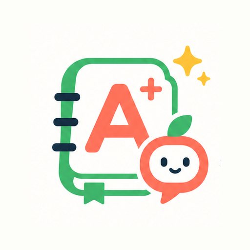
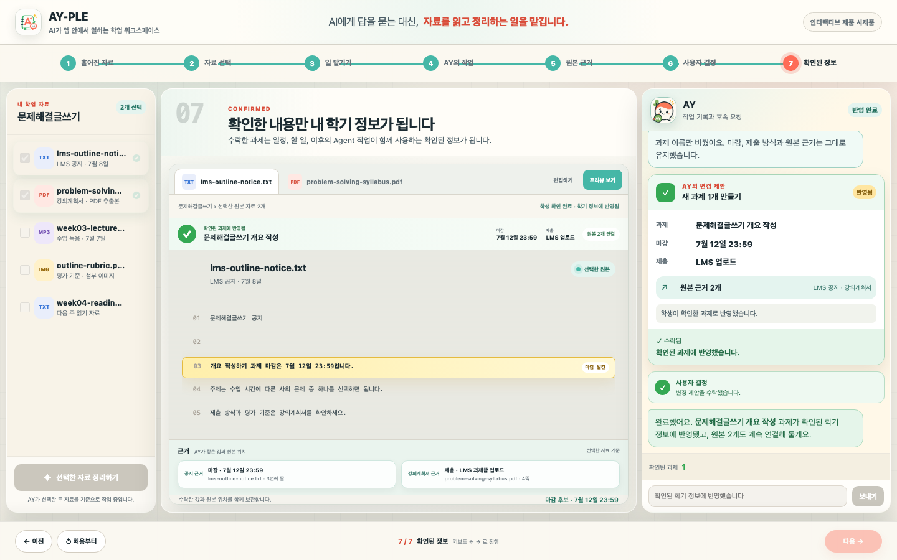
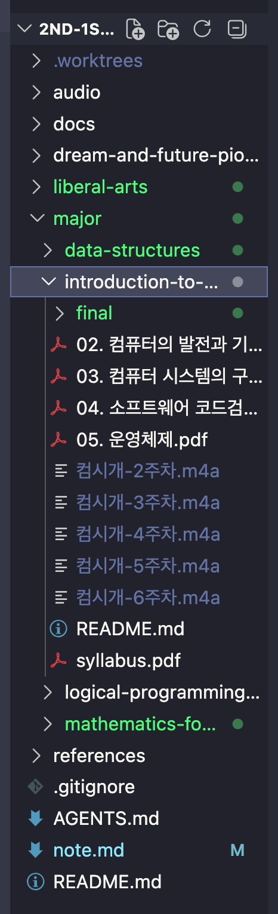
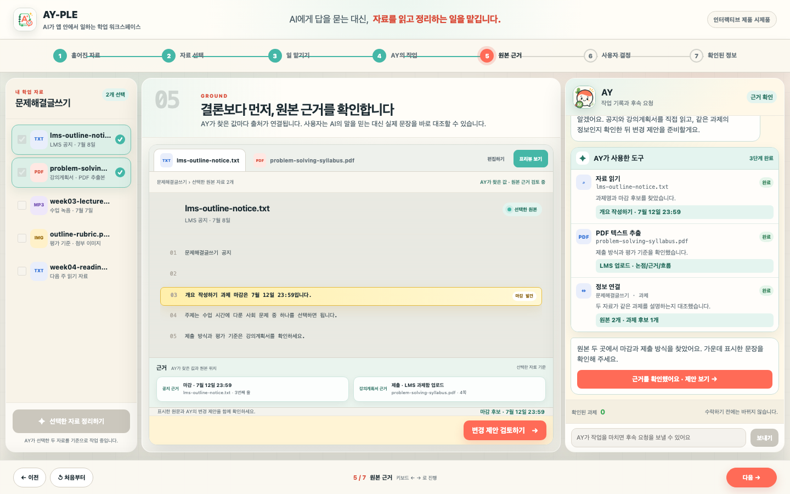
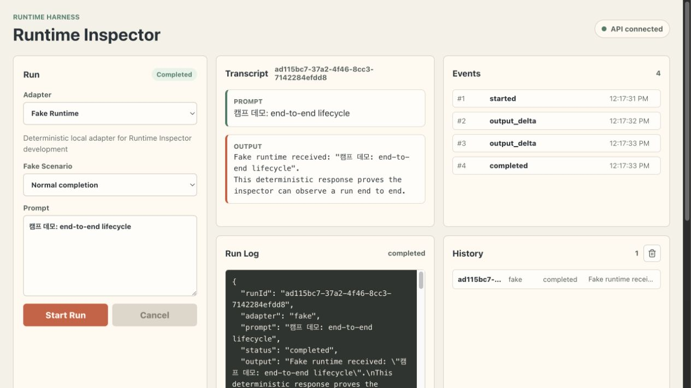

AI가 멋대로 모든 파일을 읽지 않습니다.

AY-PLE AI Agent Challenge · Camp DemoAY-PLE가 만드는 변화
흩어진 학기 자료를,
확인 가능한 학기 정보로
AY-PLE는 학생 대신 자료를 읽고 연결하되,
마지막 결정은 학생에게 돌려주는 학업 Agent 앱입니다.
자료 범위는 학생이 선택
제안마다 원본 근거 제공
확인한 내용만 상태에 반영


학생이 실제로 겪는 문제
과제 정보는 흩어지고,
학생은 매번 다시 연결합니다
강의계획서, 주차별 PDF, 수업 녹음과 개인 노트를 오가며 같은 과제의 정보를 다시 찾아야 합니다.
- 강의계획서
- 주차별 PDF
- 수업 녹음
- 개인 노트
학생이 반복하는 일
- 1자료를
하나씩 열기 - 2관련 내용을
직접 찾기 - 3서로 비교해
판단하기 - 4학기 도구에
다시 적기
AY-PLE가 바꾸는 흐름
AY가 먼저 일하고,
학생이 마지막 결정을 합니다
파일과 도구를 사용해 여러 자료를 연결합니다.
답변이 아니라 앱이 반영할 수 있는 제안입니다.
수락·수정·거절한 결과가 제품 상태가 됩니다.
제품 흐름 라이브 데모
학생이 맡기고, AY가 일하고, 함께 확인합니다
전체 화면 데모 시작 ↗실제 연결 전의 제품 시제품입니다. 실제 파일이나 Agent 호출 대신, 만들고 있는 사용자 흐름을 항상 같은 결과로 보여줍니다.

▶ 전체 화면에서 동적 데모 시작제품 데모 뒤의 실행 구조
Codex는 실행 엔진이고,
AY-PLE가 제품입니다
학생은 Codex를 직접 조작하지 않습니다. AY-PLE가 실행 능력을 제품의 범위·근거·결정 구조 안에 넣습니다.
- 01자료 범위
무엇을 읽을지 학생이 선택합니다.
- 02진행 상태
AY가 하는 일을 제품 언어로 보여줍니다.
- 03근거와 확인
원문 근거와 수락·수정·거절을 연결합니다.
- 04확인된 상태
학생이 결정한 내용만 앱에 반영합니다.
제품 경계
- 파일 읽기
선택된 원본을 형식에 맞게 다룹니다.
- 도구 사용
작업에 필요한 도구를 실행합니다.
- 여러 단계 수행
목표를 받아 작업을 이어서 완료합니다.
Week 1 · 실행 기반 검증
Agent 실행을 하나의 계약으로
반복해서 다룰 수 있는가?
확보한 결과
- 01하나의 실행 규칙
Runtime Harness로 시작부터 출력·종료까지 같은 상태로 다룹니다.
- 02같은 실행 규칙으로 비교
결정적 Fake 경로와 실제 Codex 경로가 같은 계약을 지키는지 확인했습니다.
- 03취소·실패도 기록
중간 출력과 마지막 결과를 남겨 다시 확인할 수 있습니다.

Week 2 · 공식 SDK 기반 검증
공식 Codex SDK를 직접 재사용하면서,
메시지와 완료 순서를 보존할 수 있는가?
확보한 결과
- 01공식 버전을 정확히 고정
공식 소스와 실행 버전을 하나의 재현 기준으로 고정했습니다.
- 02같은 SDK를 다시 만들 수 있게 준비
공식 Python SDK와 생성 조건·출처를 함께 보관했습니다.
- 03늦게 온 응답에도 순서 보존
먼저 온 메시지와 완료 신호를 잃지 않게 고쳤습니다.
rust-v0.144.4먼저 온 완료 신호 유실
메시지·완료 순서 보존
아직 연결되지 않음 Chat Shell · Node↔Python 연결 · 제품 Server 연결
마지막으로 남기고 싶은 기준
Codex가 제품은 아닙니다.
학생이 믿고 맡기고,
근거를 보고, 결정할 수 있는 경험이
AY-PLE의 제품입니다.
다음 제품 장면
질문이 있다면기술 부록 보기 →
검증한 실행 기반→실제 자료 선택→근거 있는 제안→확인된 학기 정보
기술 부록 A1 · Runtime Harness
Agent 실행을 하나의 계약으로
시작하고, 관찰하고, 기록합니다
이 화면은 학생용 UI가 아니라 Server·kernel·SSE·history 경계를 반복 검증하는 개발자용 진단 표면입니다.
started → output_delta → completedRuntime Harness ≠ 제품 Chat UI·diagnostic history ≠ 확인된 학기 정보·Fake demo ≠ live provider
기술 부록 A2 · SDK와 순서 적합성
공식 Python SDK를 정확한 버전으로 재사용하고,
응답이 늦게 와도 실행 순서를 보존했습니다
새 Chat Shell을 완성한 것이 아니라, 앞으로 연결할 실행 소스와 순서 계약을 재현 가능한 증거로 고정한 단계입니다.
- 커밋
8c68d4c87d…- 태그
rust-v0.144.4- 실행 버전
0.144.4
references/openai-codex
- 공식 Python 소스와 생성된 계약
- 재현 가능한 lock·wheel과 출처 기록
- 상위 소스 사본과 검토한 패치 분리
- 공식 테스트 모음과 로컬 검증 명령
- 먼저 도착한
AgentMessage를 잃지 않음 turn/completed종료 신호를 보존- 도착 순서대로 등록 시점에 재생
- 교정 전 실패 · 교정 후 실제 하위 프로세스 성공
완료 · 소스와 출처
정확한 커밋, 실행 버전, 생성 계약과 재현 가능한 산출물
완료 · 순서 교정
응답이 마지막이어도 메시지와 종료 신호를 한 번, 제 순서로 보존
다음 · 제품 연결
독립 실행 환경, 관리형 연결 계층, Chat Shell과 Server 연결부
SDK 기반 ≠ Chat Shell·적합성 검증 ≠ 제품 연결·실행 종료 ≠ 확인된 학기 정보
기술 부록 A3 · 현재와 다음
현재 동작하는 기반 위에서,
다음 실행 경로를 검증하고 있습니다
검증한 기술 기반은 새로운 Chat UI가 아니라, 그 UI가 의존할 정확히 고정한 SDK입니다. 현재 제품과 다음 실행 경로를 합쳐 말하지 않습니다.
“지금 반복해서
실행하고 관찰할 수 있는가?”
- Server·Inspector 실제 연결
- 스트리밍·취소·실패·기록
- 항상 같은 Fake 데모
“검증한 SDK를 제품 실행 경로로
어떻게 안전하게 연결할 것인가?”
- Node↔Python 관리형 연결
- 새 Chat UI와 대기 중 상호작용
- 기존 Host 전환 보류
제품 흐름 시제품+Runtime Harness 현재 기반+정확히 고정한 SDK 기반→다음 연결→제품 수직 흐름